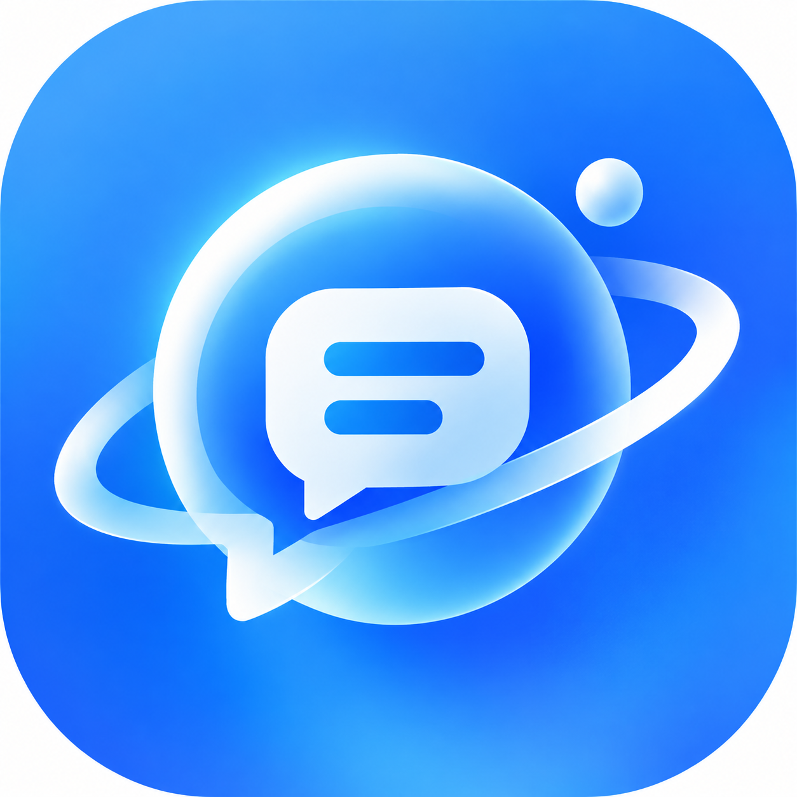

自己概括关键词
把一瞬间的触动翻译成搜索词
知乎黑客松 2026 · 灵魂匹配局
让深内容变轻
从真实表达出发，看见不同答案，
也找到值得聊聊的人。

一篇长回答读到一半，其中一句话让人停下来。
我们想知道：还有谁经历过？不同判断又从哪里来？
把一瞬间的触动翻译成搜索词
原文语境与探索过程被迫中断
主题相关，不等于真的回应这个问题
用户真正被触动的，往往是一个判断、一段经历，或一个适用条件。
从回答或文章中识别见解，连接知乎站内真实表达，再依据用户当下选择组织观点关系。
每一条发现都保留作者、语境和知乎原文入口。
相近、不同、立场不明，不再只按主题相似推荐。
从具体表达进入作者主页或私聊，以共同问题自然开场。
内置长文、收藏、创作、公开搜索
完整原文与答主的看法并行
围绕当前问题发现知乎表达
最多选择两个更接近的看法
相近、不同与立场不明
表达、追问、进入主页或私聊
↳ 点击见解，定位对应原文段落
当前见解
最多选择 2 项 · 选择只用于当前讨论
选择之后，内容关系被重新组织
主题相似只说明“在谈同一件事”；知乎·回响进一步解释“作者如何回答”。
“真正节省精力的，不是更自律，而是让重复选择自动化。”
分类依据：与用户选择共同强调减少决策摩擦。
知乎回答 · 保留原文入口 ↗
“精力管理之前，先承认体力存在明显个体差异。”
分类依据：把身体条件视为核心，而非流程优化。
知乎文章 · 保留原文入口 ↗
“我记录了一周的精力变化，发现下午的状态最稳定。”
分类依据：内容相关，但未明确回答原因判断。
知乎回答 · 保留原文入口 ↗
不是先匹配抽象标签，而是让双方因为一条具体表达相遇。
与你在「减少日常摩擦」上观点相近
提供不同判断，也给出了真实经历
共同关注小资源条件下的可复制方法
用户已经知道对方表达过什么、彼此哪里相近或不同。共同问题，就是自然的开场。
从一个具体判断开始，内容发现和兴趣社交自然衔接。
内置回答提出：成功人士精力旺盛，可能来自对日常摩擦的系统性消除。
系统整理支持这一判断、强调体力或目标感的不同判断，以及立场尚不明确的相关内容。
进入相关作者主页，以同一个具体问题发起交流。
服务端校验字段、观点选项和原文段落锚点。
按相近、不同、立场不明分类，并返回 0–100 相关度。
AI 请求超时三十秒；成功分析在浏览器缓存二十四小时。
会话加密；HttpOnly、SameSite=Lax，生产环境 Secure。
连接的不只是结论，更是作者为何这样判断、经历了什么，以及观点成立的条件。
问题、回答和文章里的经验、方法、边界与反例，通过「见解」重新相遇。
主题相似不等于观点相近；用户选择后，系统再组织相近、不同与立场不明。
双方因具体表达相遇，带着共同兴趣或明确分歧，进入作者主页与真人私聊。
回应当前问题比发布时间和热度更重要，高质量旧内容因此能被再次发现。
保留作者、标题、片段与原文链接；AI 只整理关系，不制造脱离来源的答案。